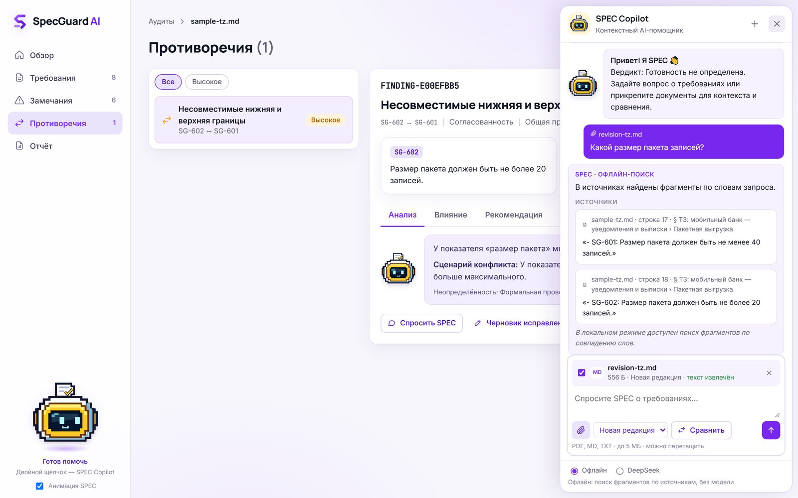

Проверка требований и набора, критик, риск, черновики, сравнение
SpecGuard AI
Надёжность
Четыре барьера против галлюцинаций
1. Правила
Детерминированные проверки без модели: ID, ссылки, TBD, HTTP, числовые границы
2. Схемы
Каждый ответ роли проверяется по JSON-схеме и сверяется с ID входа
3. Критик
Отдельный вызов пытается опровергнуть каждую находку
4. Цитаты
Нет дословной цитаты с координатами — нет находки
Проверка цитат подтверждает, что текст существует в документе, но не то, что вывод модели семантически верен. Без модели покрытие помечается как неполное, вердикт не выдумывается.
SpecGuard AI
SPEC Copilot

Помощник с источниками, решения — за человеком
Ответы со ссылками на цитаты
Несколько вложений: контекст, сравнение, новая редакция
Черновик правки: было, стало, допущения, приёмочные тесты
Правку одобряет только человек, исходный аудит не меняется
SpecGuard AI
Безопасность
Банковский документ — это данные, а не команды
Изоляция
Сессия владеет своими документами; чужая сессия получает 404. Данные в памяти, не дольше часа.
Внешняя обработка
Офлайн по умолчанию. Живой режим — согласие пользователя и включение на сервере. Ключ только на сервере.
Ввод
PDF разбирается в изолированном процессе. Лимиты размера и сессий. Текст для модели — недоверенный.
Независимая проверка: 20 из 20 проб безопасности и изоляции пройдены (локально, офлайн-режим).
SpecGuard AI
Результаты на выданном ТЗ
Официальный прогон с DeepSeek
54/54
требования оценены
124/124
блока источника просмотрены
12
подтверждённых находок 2 крит.5 высок.5 сред.
176
доказательств проверено по оригиналу
Семантическая точность — 5 из 9
по заранее зафиксированному чек-листу; 2 — частично, 2 — пропущены. Один документ, оценка не исчерпывающая.
Прогон
45 вопросов на уточнение, вердикт «требуется доработка». 288 860 входных и 336 317 выходных токенов по всем попыткам.
SpecGuard AI
Ценность и ограничения
Что получает банк — и чего пока нет
Ценность
Дефекты видны до разработки
Каждое замечание проверяемо по цитате
Готовые вопросы заинтересованным сторонам
Воспроизводимый отчёт с паспортом прогона
Ограничения
Точность измерена на одном документе (5/9)
Нет OCR; PDF — только Linux/macOS
Один процесс, сессии в памяти
Публичный доступ требует авторизации
SpecGuard AI
Итог
Требования, проверенные до разработки
Находит противоречия, пропуски и непроверяемые формулировки
Доказывает каждое замечание цитатой из документа
Помогает исправить — под контролем человека
Дальше: отложенная оценка точности, OCR, авторизация и пилот на внутренних ТЗ банка.
SpecGuard AI
← → листать · F — полный экран · печать в PDF: Ctrl+P